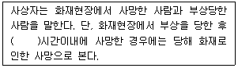
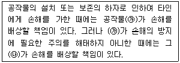
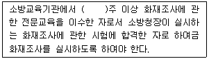
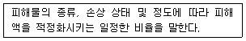

화재감식평가기사 (2020-09-26 기출문제)
1과목: 화재조사론
1. 다음은 화재조사의 과학적인 방법론이다. 순서에 맞게 배열한 것은?
- 문제인식 → 문제정의 → 가설 설정 → 자료 수집 → 자료 분석 → 가설 검증 → 최종 가설선택
- 문제정의 → 문제인식 → 자료 수집 → 자료 분석 → 가설 설정 → 가설 검증 → 최종 가설선택
- 문제정의 → 문제인식 → 자료 수집 → 자료 분석 → 가설 검증 → 가설 설정 → 최종 가설선택
- 문제인식 → 문제정의 → 자료 수집 → 자료 분석 → 가설 설정 → 가설 검증 → 최종 가설선택
(정답률: 74%)

2. 화재와 연소에 대한 설명으로 옳지 않은 것은?
- 화재란 사람의 의도에 반하거나 고의에 의해 발생하는 연소현상으로서 소화시설등을 사용하여 소화할 필요가 있는 것을 말한다.
- 연소란 가연성 물질이 산소와 결합하여 열과 빛을 내며 급속히 산화되어 형질이 변경되는 화학반응을 말한다.
- 연기란 연소 및 열분해에 의한 생성물로서 공기 중에 부유하고 육안으로 보이는 기체의 집단을 말한다.
- 연기 입자의 크기는 연소조건에 따라 차이는 있지만, 무염연소의 경우에는 약 1㎛, 유염연소의 경우에는 약 1~5㎛의 것이 대부분을 차지한다.
(정답률: 75%)
3. 발화지점으로 추정되는 위치에서 발화원, 발화물질 등 연소된 물건을 현장발굴하는 방법에 대한 설명으로 옳지 않은 것은?
- 발굴은 가능한 삽과 같은 것을 사용한다.
- 발굴한 물건 중 복원할 필요가 있는 것은 번호 또는 표식을 부착해 정리해 둔다.
- 발굴은 위에서 아래로 실시한다.
- 발굴한 연소된 물건은 가능한 그 위치를 옮기지 않는다. 불가피하게 이동하는 경우에는 복원가능한 조치를 한다.
(정답률: 92%)
4. 연소에 따른 금속의 산화작용으로 옳지 않은 것은?
- 온도가 높을수록, 노출 시간이 짧을수록 산화의 효과가 많이 나타난다.
- 철이나 강철이 화재에서 산화되었을 때, 처음에는 푸르스름하고 흐린 회색이 된다.
- 스테인리스 스틸이 심하게 산화되면 흐린 회색을 띠게 된다.
- 구리는 열에 노출되면 어두운 적색이나 흑색 산화물을 만든다.
(정답률: 87%)
5. 소방대(선착대)의 연소상황조사 내용에 포함되지 않는 것은?
- 소화활동중의 특이한 연소상황(색, 냄새 등)
- 주수위치 및 주수효과의 상황
- 피해소방대상물의 소손면적, 동수, 이재 세대의 상황
- 사상자 및 사상된 장소의 상황
(정답률: 61%)
6. 화재조사 전 준비의 내용으로 가장 거리가 먼 것은?
- 조사관은 사고의 날짜, 요일 및 시간을 정확하게 판단해야 한다.
- 사고가 발생한 뒤 흐른 시간은 조사 계획에 영향을 줄 수 있다.
- 사건의 사실 및 환경은 현장 조사 후 확인하여야 한다.
- 사고와 조사 사이에 시간이 많이 지연될 경우 기존문서와 정보를 검토하는 것이 더 중요하다.
(정답률: 80%)
7. 화학적 폭발에 대한 설명 중 옳은 것은?
- 산소 농도가 낮을수록 폭발 위력이 크다.
- 압력이 높을수록 폭발의 위력이 적다.
- 입자가 작을수록 폭발의 위력이 적다.
- 혼합비율이 화학양론비에 가까울수록 위력이 크다.
(정답률: 91%)
8. 일반 주택화재의 발화지점을 판정할 때 활용되는 정보로 가장 거리가 먼 것은?
- 화재패턴
- 산소 농도
- 목격자 진술
- 전기합선 지점 분석
(정답률: 80%)
9. 화재가 나타내는 V패턴의 설명으로 옳지 않은 것은?
- 불꽃과 대류 또는 복사열에 의해서 생성된다.
- 연소가 진행될 때 수직으로 된 벽면에 나타난다.
- 패턴이 나타내는 각도가 넓으면 연소의 속도가 느리다.
- 발화지점이 아닌 곳에서도 생성될 수 있다.
(정답률: 75%)
10. 유류화재 발생 시 포소화약제를 유류표면에 발포하면 재착화가 일어나지 않으나 분말소화약제에 비해 소화시간이 긴 단점을 가지고 있다. 이와 같은 단점을 보완하기 위하여 분말소화약제와 함께 사용이 가능한 포소화약제로 가장 적절한 것은?
- 수성막포소화약제
- 단백포소화약제
- 알코올형포소화약제
- 합성계면활성제포소화약제
(정답률: 77%)
11. 여러 동의 인접한 건물이 소손되어 있는 화재현장에서 발화건물 판정을 위한 일반적인 조사요령에 관한 설명으로 옳지 않은 것은?
- 화재현장 전체의 연소방향은 가급적 낮은 쪽에서 높은 쪽을 바라보며 파악한다.
- 각 건물의 연소방향은 타다 멈춘 부분 또는 연속강약이 명확한 부분부터 파악한다.
- 타서 허물어진 부분을 보고 연소방향을 추정할 수 있다.
- 복수의 건물이 소손되어 있으면 인접동간격, 외벽구조, 개구부상황 등으로부터 연소상황을 파악한다.
(정답률: 91%)
12. 물질의 연소와 관련이 있는 열관성(Thermal inertia)을 식으로 옳은 것은? (단, k는 열전도, ρ는 밀도, c는 열용량이다.)
- c/kρ
- kc/ρ
- ρc/k
- kρc
(정답률: 68%)
13. V패턴의 각도에 영향을 미치지 않는 것은?
- 열방출률
- 가연물의 형태
- 환기의 효과
- 벽면의 열전도성
(정답률: 63%)
14. 화재패턴 중 붕괴된 침대 스프링에 대한 설명으로 옳은 것은?
- 스프링의 붕괴된 부위과 붕괴되지 않은 부위를 비교하여 화염외 방향을 추정할 때 붕괴된 부위 방향을 화재의 진행방향으로 판단할 수 있다.
- 화재이전 부터 침대 위에 무거운 것이 올려져 있다면 화염의 방향과 상관없이 붕괴될 수 있으며, 소락몰에 의한 영향은 없다.
- 무거운 것이 올려져 있지 않다면 스프링은 붕괴되지 않는다.
- 화재이후에도 붕괴되지 않고 남아있는 스프링은 붕괴된 스프링과 같이 탄성을 잃어버린다.
(정답률: 79%)
15. 소방기관이 화재조사를 수행하는 근복적인 목적으로 옳은 것은?
- 유사화재의 재발 방지와 피해 경감을 위한 자료로 활용
- 출화원인 규명으로 사법처리 근거 자료로 활용
- 인적, 물적 피해사항 조사를 통한 통계 자료로 활용
- 법률관계에 수반된 증거보전 자료로 활용
(정답률: 92%)
16. 화염 충돌에 의한 화재확산에 대한 설명으로 옳지 않은 것은?
- 구획공간에서 연료가 있는 위치에 따라 화염의 길이가 달라진다.
- 구획공간에서 연료의 위치가 벽과 구석(coner)에 있을 때 화염의 길이는 구석이 더 길다.
- 화염의 높이가 천장보다 클 때는 화염이 천장을 따라 확장된다.
- 천장에 의해서 화염이 잘려질 때 화염의 전체길이는 자유 화염높이보다 작아진다.
(정답률: 72%)
17. 탄화알루미늄이 상온에서 물과 반응할 경우 생성되는 가연성 기체는?
- 수소
- 아세틸렌
- 메탄
- 프로판
(정답률: 69%)
18. 공기의 비중을 1이라 했을 때 다음 중 비중이 가장 큰 가스는?
- 수소
- 부탄
- 프로판
- 메탄
(정답률: 69%)
19. 구획실 화재에서 플래시오버를 일으키는 화재의 최소 크기와 환기구 높이의 관계에 대한 설명으로 옳은 것은?
- 화재의 최소 크기는 환기구의 높이의 제곱근에 비례한다.
- 화재의 최소 크기는 환기구의 높이의 제곱에 비례한다.
- 화재의 최소 크기는 환기구의 높이의 세제곱근에 비례한다.
- 화재의 최소 크기는 환기구의 높이의 세제곱에 비례한다.
(정답률: 64%)
20. 화재조사의 책임과 권한에 대한 설명으로 옳은 것은?
- 소방서장은 관계보험사가 그 화재원인과 피해상황을 조사하고자 할 때에는 이를 허용해서는 안된다.
- 소방서장은 화재의 원인 및 피해 등에 대한 조사를 소화활동 후에 실시하여야 한다.
- 과실로 인한 위법행위로 타인에게 손해를 가한 자는 그 손해를 배상할 책임이 없다.
- 소방서장은 화재조사를 위하여 필요한 경우에는 수사에 지장을 주지 아니하는 범위에서 그 피의자 또는 압수된 증거물에 대한 조사를 할 수 있다.
(정답률: 93%)
2과목: 화재감식론
21. 무염화원이 아닌 것은?
- 담뱃불
- 그라인더 불티
- 모기향
- 촛불
(정답률: 93%)
22. 다음 중 염소(CI)성분을 포함하고 있는 가스는?
- 암모니아
- 아세틸렌
- 포스겐
- 시안화수소
(정답률: 65%)
23. 계획적인 방화로 분류되지 않는 것은?
- 정신이상에 의한 방화
- 이익목적에 의한 방화
- 정치적 목적에 의한 방화
- 원환에 의한 방화
(정답률: 90%)
24. 선박에서 인접하는 구획 사이를 2개의 분리된 격벽이나 갑판으로 격리시키는 구역을 무엇이라 하는가?
- A급 구획
- B급 구획
- 코퍼댐(cofferdam)
- 제연벽
(정답률: 77%)
25. 산화에틸렌 90%와 메탄 10%가 혼합되어 있는 경우 폭발하한계로 옳은 것은? (단, 메탄의 연소범위는 5~15vol.%, 산화에틸렌의 연소범위는 3~80vol.%이다.)
- 1.79 vol.%
- 3.13 vol.%
- 32 vol.%
- 55.81 vol.%
(정답률: 80%)
26. 임의의 도선에 흐르는 전류에 의한 자계의 세기 단위로 옳은 것은?
- [V·T/cm2]
- [V·T/M]
- [A·T/cm2]
- [A·T/m]
(정답률: 65%)
27. 다음 폭발 중 기상폭발에 해당하는 것이 아닌 것은?
- 가스폭발
- 분진폭발
- 분무폭발
- 수증기폭발
(정답률: 68%)
28. 방화의 직접적 단서가 될 수 없는 것은?
- 도화선
- 색다른 촉진제
- 비정상적인 연료하중
- 출입문의 잠김 상태
(정답률: 88%)
29. 다음 중 자연발화성 물질의 자연발화를 촉진시키는 데 영향을 주지 않는 것은?
- 표면적이 넓고 발열량이 클 것
- 열전도율이 클 것
- 주위온도가 높을 것
- 반응성이 클 것
(정답률: 91%)
30. 산불진화 시 열 스트레스 손상으로 가장 거리가 먼 것은?
- 열 경련
- 탈수 피로
- 열 발작
- 혼수상태
(정답률: 85%)
31. 성냥의 나무개비에 침투시켜 연소 후 탄화시키는 약제는?
- 곰팡이 방지제
- 표백제
- 염색제
- 인풀제
(정답률: 80%)
32. pH=3인 수용액의 [H+]는 pH=5인 수용액의 [H+]의 몇 배인가?
- 0.01
- 10
- 100
- 1000
(정답률: 74%)
33. 임야화재 시 수관화의 특징으로 옳은 것은?
- 중심부의 화염온도는 2500℃이다.
- 주변의 연기온도는 1500℃이다.
- 바람이 강할 때 연소속도는 7km/h이다.
- 임야화재 연소 중에 수십 m의 상승기류가 발생한다.
(정답률: 70%)
34. LPG차량엔진의 구성 부품 중 봄베에 부착된 충전밸브, 기체 송출밸브 및 액체 송출밸브의 색상을 순서대로 바르게 나열한 것은?
- 녹색, 적색, 황색
- 녹색, 황색, 적색
- 황색, 녹색, 적색
- 황색, 적색, 녹색
(정답률: 84%)
35. 차량용 LPG 기화기(Vaporizer)의 설명 중 옳은 것은?
- 1차 감압실은 봄베로부터 전달된 액체 LPG를 0.8kg/cm2으로 감압 및 기화하여 2차 감압실로 보낸다.
- 고정 조정 스크루는 공회전 상태에서 스크루를 돌려 공회전 상태의 CO 또는 HC의 농도를 조절한다.
- 1차 압력조정 스크루는 1차 감압실의 LPG 압력을 0.8kg/cm2으로 저장하기 위한 스크루이다.
- 저속차단 솔레노이드밸브는 LPG가 액체상태에서 기체로 될 때 주위로부터 기화열을 흡수하여 동결시키는 현상을 방지하기 위한 장치이다.
(정답률: 49%)
36. 방화의 특징으로 옳지 않은 것은?
- 2개 이상의 독립된 발화개소가 식별된 경우
- 덕트나 배관용 파이프홀을 통해 다른 층이나 다른 방실로 화재가 확산되는 경우
- 용도별로는 주택 및 차량에 대한 방화가 많음
- 휘발류, 시너 등을 사용하는 경우가 많아 화재확산이 매우 빠름
(정답률: 86%)
37. 전기화재 발생과정에 대한 설명 중 옳지 않은 것은?
- 코드의 접촉불량 시 접촉저항의 증가로 줄열에 의한 화재 발생
- 고압 변압기의 충전부에서 누설 방전으로 절연이 파괴되어 화재 발생
- 코일의 층간 단란으로 저항이 증가하여 전류가 감소되며 화재 발생
- 물 없는 전기온수기를 통전 방치하여 주변 가연물에서 화재 발생
(정답률: 72%)
38. 차량이 충돌 또는 추돌하는 경우, 누출된 연료 및 오일의 점화로 인해 화재로 이어져 인명사고가 발생하는 경우가 있다. 동 경우, 발화원인으로 작용할 수 없는 것은?
- 차량 파손에 동반된 전선의 단락에 의한 전기적 발열
- 차량 파손에 동반된 고온의 충격 마찰열
- 차량 파손에 동반된 엔진 표면 및 배기계통의 고온 열면
- 차량의 파손에 동반된 냉각수의 분출
(정답률: 88%)
39. 항공기에서 이상적인 화재감지장치(fire detection system)의 특징이 아닌 것은?
- 화재가 계속되는 동안 계속 지시해야 한다.
- 화재가 다시 발생하는 경우 다시 정확히 지시해야 한다.
- 조종실에서 감지기장치를 시험 시 소요되는 전력은 많아야 한다.
- 취급에서 노출에 견딜 수 있도록 견고해야 한다.
(정답률: 90%)
40. 방화의 일반적인 판단요소로 가장 거리가 먼 것은?
- 국부적인 발화흔적
- 무단침입과 흔적
- 범죄흔적
- 이상 연소현상
(정답률: 69%)
3과목: 증거물관리 및 법과학
41. 화재사의 사인과 그 내용이 올바르게 연결된 것은?
- 화상사: 화재에 따른 현상에 의해 신경을 자극해서 정신 또는 신체가 충격을 받아 사망한 것
- 질식사: 화재 시 발생한 일산화탄소 등 유독가스가 혈액의 산소공급을 막아 조직의 산소 결핍으로 사망한 것
- 소사: 화재로 인하여 화염 등 고열이 피부에 작용하여 화상을 입은 후 그 상황에서 2차적인 조건에 의해 사망한 것
- 쇼크사: 화재로 인한 화상과 더불어 화염에 의해 불에 타서 사망하거나 일산화탄소에 의한 유독가스 중독과 산소결핍에 의한 질식 등이 합병되어 사망한 것
(정답률: 85%)
42. 화재로 사망한 사람의 생활반응으로 틀린 것은?
- 일산화탄소의 중독으로 사망한 경우 암적색 시반이 타나난다.
- 분신자살자는 혈중 일산화탄소 농도가 전혀 나오지 않는 경우도 있다.
- 흡연자의 경우, 평소에도 비흡연자보다 높은 수준의 일산화탄소 농도가 나타난다.
- 사망에 이르는 혈중 일산화탄소의 농도는 10~80%까지 개개인마다 차이가 있다.
(정답률: 82%)
43. 화재현장에서의 현장임장 및 증거물 수집활동의 법적근거가 아닌 것은?
- 형사소송법 제218조 영장에 의하지 아니한 압수
- 형사소송법 제216조 영장에 의하지 아니한 강제처분
- 형사소송법 제308조 제2항 위법수집증거 배제원칙
- 범죄수사규칙 제8장제2절, 제124조, 제125조 범죄현장과 증거보존, 유류물 등의 압수
(정답률: 67%)
44. 증거물 오염이 가중되는 시기로 맞는 것은?
- 보관할 때
- 이송할 때
- 수집할 때
- 발견했을 때
(정답률: 84%)
45. 화재현장에서 화재조사자의 의무가 아닌 것은?
- 화재원인과 피해 조사를 위한 출입 검사의무
- 화재원인과 피해조사 시 경찰공무원과의 협력의무
- 증거물과 피의자에 대한 조사를 수행함에 있어 경찰의 수사를 방해하지 않아야 할 의무
- 방화, 실화 등 범죄의 혐의가 있는 경우 관할 경찰서장에게 알리고 필요한 증거를 수집 보존할 의무
(정답률: 67%)
46. 인화점 측정을 위한 장비가 아닌 것은?
- Pensky-Martens
- Tag Closed Cup
- Cleveland Open Cup
- Scanning Electron Microscope
(정답률: 75%)
47. 훈소가 가능한 물질에 해당하는 것은?
- 종이
- 스티로폼
- 나일론섬유
- 플라스틱
(정답률: 79%)
48. 화재로 발생한 열에 의해 유리창이 파손되는 원인에 대한 설명으로 맞는 것은?
- 열을 받는 유리가 녹으면서 깨진다.
- 유리면의 온도차에 의한 응력으로 깨진다.
- 유리를 구성하는 규소의 열분해에 의해 깨진다.
- 화재가 발생한 실내의 높아진 압력에 의해 깨진다.
(정답률: 75%)
49. 아파트의 주방에서 가스폭발로 20대 여성이 둔상을 입었다. 둔상은 폭발효과에 의한 부상의 4가지 유형 중 어느 것인가?
- 열효과에 의한 부상
- 지진효과에 의한 부상
- 파편효과에 의한 부상
- 압력파효과에 의한 부상
(정답률: 65%)
50. 화재조사를 위한 사진촬영의 중요성에 해당하지 않는 것은?
- 사실의 묘사성
- 진술의 신뢰성
- 기억의 환기성
- 증거의 조작성
(정답률: 79%)
51. 플라스틱 증거물에 관한 설명으로 맞는 것은?
- 열가소성 물질은 용해되고 흘러서 화재 확대의 원인이 된다.
- 폴리우레탄 같은 열가소성 물질은 탄화물질을 형성하지 않는다.
- 탄화수소계의 기본적인 고체 가연물인 플라스틱의 약 90%는 열경화성이다.
- PVC와 같은 열경화성 물질은 가열되면 용융, 변형, 그리고 드롭다운 패턴이 형성된다.
(정답률: 56%)
52. 카메라 촬영에 있어 피사계심도 조절 방법으로 틀린 것은?
- 피사계심도를 얕게 하는 방법으로 렌즈구경을 개방한다.
- 피사계심도를 깊게 하는 방법으로 촬영거리를 가깝게 한다.
- 피사계심도를 얕게 하는 방법으로 초점거리가 더 긴 렌즈를 사용한다.
- 피사계심도를 깊게 하는 방법으로 초점거리가 더 짧은 렌즈를 사용한다.
(정답률: 56%)
53. 화재와 관련된 사망자 분석으로 틀린 것은?
- 피는 열의 영향으로 귀, 코, 입에서 스며나올 수 있다.
- 화재로 인한 희생자는 모두 사망시간을 측정해야 한다.
- 화재로 인한 희생자는 모두 일산화탄소 포화상태를 측정해야 한다.
- 사체 외부에서 발견된 피는 사망하기 전에 신체적 외상을 입었다는 것을 나타낸다.
(정답률: 60%)
54. 화재현장의 사진촬영 기법에 대한 설명으로 틀린 것은?
- 발화지점을 중심으로 연소 확산된 상황을 촬영
- 화재대상물과 주위의 위치관계를 알 수 있도록 촬영
- 가능한 소실된 현장을 국소적으로만 자세하게 촬영
- 외부 촬영 시 먼 곳에서 화재대상물 전면을 담아낼 수 있는 위치에서 촬영
(정답률: 93%)
55. 가연성액체 증거보관용기의 설명으로 틀린 것은?
- 가연성액체 증거를 온전하게 보존해야 한다.
- 가연성액체 증거의 오염과 변화를 예방해야 한다.
- 가연성액체 증거의 기화를 막기 위해 밀봉이 되어서는 안 된다.
- 가연성액체 증거의 물리적 상태, 특징, 파괴성, 휘발성을 고려하여 선택한다.
(정답률: 89%)
56. 화재조사에서 전기설비 및 구성부품의 증거물 수집 시 유의사항으로 맞는 것은?
- 전체 전기 기기나 전기 제품을 있는 그대로 수집해야 한다.
- 전선의 한쪽 끝에는 태그를 붙여 회로 장치 등의 내용을 표시한다.
- 전선 피복의 검사가 용이하도록 가능한 전선을 짧게 수집해야 한다.
- 증거물이 발견되면 다른 구성부품과의 혼란 방지를 위해 신속히 이동시킨다.
(정답률: 63%)
57. 가스크로마토그래피법을 통해 분리된 각 원소들에 대한 상세한 분석을 수행하는 장비로 맞는 것은?
- Mass Spectrometer
- Tag Closed Tester
- X-ray Fluorescence
- Infrared Spectrophotometer
(정답률: 49%)
58. 액체 연소촉진제의 물리적 증거 수집 시 고려사항으로 틀린 것은?
- 흡수성 물질(밀가루 등)은 실험실로 옮겨서 추출하는 것이 좋다.
- 액체 연소촉진제는 다공성 물질 안에 갇혔을 때 다공성 물질 안에 존재할 가능성이 높으므로 주의 깊게 확인한다.
- 액체 연소촉진제는 대부분 구조부, 내부 마감재 및 기타 화재 잔해에 쉽게 흡수됨으로 물질 내부에 흡수되었는지 확인한다.
- 모든 액체 연소촉진제는 물보다 가벼워 물과 접촉 시 그 위에 뜨므로 기름띠를 확인하는 것만으로도 액체 연소촉진제가 있었는지를 알아낼 수 있다.
(정답률: 72%)
59. 타임라인에서 상대적 시간에 포함되는 것은?
- 완전소화시간
- 목격된 지속시간
- 신고가 접수된 시간
- 알람의 설정과 작동시간
(정답률: 76%)
60. 화재현장에서 질문 내용의 녹음 방법으로 맞는 것은?
- 진술 거부 시 유도심문을 한다.
- 질문은 길게 하고 간결한 답변을 요구한다.
- 사전에 녹음사실을 알리고 임의적 진술을 확보한다.
- 관계자외 심리적 상태를 고려하여 화재로부터 2~3일 후 면담을 한다.
(정답률: 81%)
4과목: 화재조사보고 및 피해평가
61. 피해물의 경제적 내용연수가 다한 경우 잔존하는 가치의 재구입비에 대한 비율을 무엇이라 하는가?
- 잔가율
- 손해율
- 최종잔가율
- 보정률
(정답률: 77%)
62. 화재피해 조사서(인명) 작성 시 기재사항이 아닌 것은?
- 사상부위
- 사상시 위치·행동
- 사상전 상태
- 사상자 가족 인적사항
(정답률: 83%)
63. 화재조사 및 보고규정상 사후조사에 대한 설명으로 맞는 것은?
- 사후조사는 발화장소 및 발화지점의 현장이 보존되어 있는 경우에만 조사를 한다.
- 사후조사의 경우에도 화재현장 출동보고서를 반드시 작성하여야 한다.
- 사후조사의 경우 화재발생종합보고서는 화재조사 및 보고규정 별지 제3호 서식이 아닌 별도의 서식에 의해 작성한다.
- 소방대가 출동하지 아니한 화재장소의 화재증명원 발급요청이 있는 경우, 조사관이 판단하여 사후조사를 실시한 후 보고서를 작성한다.
(정답률: 65%)
64. 화재조사 및 보고규정상 화재조사 활동의 개시시점으로 맞는 것은?
- 화재사실 인지와 동시
- 화재현장 도착돠 동시
- 화재진화 활동과 동시
- 화재진화 작업종료와 동시
(정답률: 82%)
65. 공구 및 기구의 소손정도에 따른 손해율로 틀린 것은?
- 오염·수침손의 경우 : 10%
- 손해정도가 보통인 경우 : 20%
- 손해정도가 다소 시함 경우 : 50%
- 50% 이상 소손되고 그을음 및 수침오염 정도가 심한 경우 : 100%
(정답률: 65%)
66. 화재조사 및 보고규정상 화재현장출동 보고서의 작성을 생략할 수 있는 경우는?
- 항구에 메어둔 선박에서 화재가 발생하여 조사하는 경우
- 건축물이 아닌 야외 공터의 쓰레기 화재에 대해 조사한 경우
- 소방대가 화재현장에 출동하였고, 재산피해가 경미한 경우
- 소방대가 출동하지 않은 화재현장에 대해 미원인이 사후조사를 의뢰하였고, 현장이 보존되어 사후조사를 실시한 경우
(정답률: 63%)
67. 화재현장조사서 작성 시 발화원인 판정의 방법으로 틀린 것은?
- 재현실험의 데이터나 각종 문헌 등을 인용한다.
- 제조물 관련 화재의 경우, 경험에 기초하여 주관적 증명이 가능하도록 한다.
- 난해한 전문용어나 어려운 이론을 열거하는 것은 피하고 논리적 표현을 사용한다.
- 질문조사서 등의 서류로부터 사실인용과 합리적·과학적인 논리전개가 중심이 된다.
(정답률: 88%)
68. 모델하우스 또는 가설건물 등 일정기간 존치하는 건물에 있어서는 실제 존치할 기간을 내용연수로 하여 피해액을 산정한다. 이 경우 존치기간 종료일 현재의 최종잔가율은 얼마인가?
- 10%
- 20%
- 30%
- 40%
(정답률: 64%)
69. 화재원인 분류에서 화학적 요인에 해당하지 않는 것은?
- 자연발화
- 혼촉발화
- 물리적 폭발
- 금수성물질과 물의 접촉
(정답률: 74%)
70. 화재피해조사 중 재산피해 유형에 관한 설명으로 틀린 것은?
- 수손피해: 소화활동으로 발생한 수손피해 등
- 소실피해: 열에 의한 탄화, 용융, 파손 등의 피해
- 영업피해: 화재발생으로 영업을 하지 못해 발생한 영업손실
- 기타피해: 연기, 물품반출, 화재 중 발생한 폭발 등에 의한 피해 등
(정답률: 76%)
71. 화재조사서류 작성상의 유의사항으로 틀린 것은?
- 필요한 서류가 첨부되어야 한다.
- 원칙적으로 평이하고 알기 쉬운 문장으로 작성토록 노력한다.
- 오자, 탈자 등이 없도록 글자 하나라도 가볍게 보아서는 안 된다.
- 화재유형별 조사서는 화재의 유형에 관계없이 동일 양식에 기재하여야 한다.
(정답률: 90%)
72. 화재피해액을 산정할 때 손해율의 적용할 때 손해율을 구분하는 기준은?
- 내용연수
- 경년감가율
- 최종잔가율
- 화재로 인한 피해정도
(정답률: 53%)
73. 내용연수가 30년이고 경과연수가 15년인 건물의 잔가율은 얼마인가?
- 30%
- 40%
- 50%
- 60%
(정답률: 64%)
74. 다음 중 작성자가 다른 화재조사 서류는?
- 질문기록서
- 화재현장조사서
- 화재피해조사서
- 화재혀장 출동보고서
(정답률: 80%)
75. 예술품 및 귀중품의 피해액 산정을 위한 기준으로 맞는 것은? (단, 그 가치를 손상하지 아니하고 원상태의 복원이 가능한 경우는 제외한다.)
- 시중매매가격
- 감정서의 감정가액
- 수리비에 의한 방식
- 회계장부상의 구입가액
(정답률: 85%)
76. 화재 등으로 인한 피해액 산정에 있어 최종잔가율 20% 적용이 아닌 것은?
- 건물
- 부대설비
- 비품
- 가재도구
(정답률: 62%)
77. 화재조사 및 보고규정에서 소실정도를 구분할 때 전소에 대한 설명으로 틀린 것은?
- 반소 보다 소실비율이 높다.
- 일반적으로 건물의 경우 70% 이상 소실된 것을 의미한다.
- 소실비율은 소실된 건물의 바닥면적을 기준으로 한다.
- 소실정도가 70%미만인 경우에 잔존부분을 보수하여도 재사용이 불가능한 것은 전소에 해당한다.
(정답률: 70%)
78. 영업시설의 피해액 산정 시에 개·보수한 때를 기준으로 경과연수를 산정하는 것은 재 설치비의 몇 %이상 개·보수한 경우인가?
- 50
- 60
- 70
- 80
(정답률: 46%)
79. 화재현황 조사서의 기재사항이 아닌 것은?
- 건물상태
- 화재발생장소
- 화재원인
- 발화관련기기
(정답률: 63%)
80. 철거건물에 대한 피해액 산정 시의 최종잔가율로 맞은 것은?
- 5%
- 10%
- 15%
- 20%
(정답률: 47%)
5과목: 화재조사관계법규
81. 화재로 인한 재해보상과 보험가입에 관한 법률상 특수건물에 대하여 손새보험회사가 운영하는 특약부화재보험에 가입하지 아니한 자의 벌칙 기준으로 옳은 것은?
- 100만원 이하의 벌금
- 300만원 이하의 벌금
- 500만원 이하의 벌금
- 700만원 이하의 벌금
(정답률: 78%)
82. 소방기본법상 화재조사를 하기 위한 관계 공무원의 출입 또는 조사를 거부·방해 또는 기피하는 자에 대한 벌칙 기준으로 옳은 것은?(오류 신고가 접수된 문제입니다. 반드시 정답과 해설을 확인하시기 바랍니다.)
- 100만원 이하의 벌금
- 200만원 이하의 벌금
- 300만원 이하의 벌금
- 500만원 이하의 벌금
(정답률: 50%)
83. 화재조사 및 보고규정에 따른 사상자의 기준 중 다음 ( )안에 알맞은 것은?

- 72
- 48
- 36
- 24
(정답률: 89%)
84. 소방청장, 소방본부장 또는 소방서장이 방화(放火) 또는 실화(失火)의 혐의가 있어서 수사기관이 이미 피의자를 체포하였거나 증거물을 압수하였을 때에 화재조사를 위하여 피의자 또는 압수된 증거물에 대한 조사를 하는 경우에 대한 설명으로 옳은 것은?
- 필요할 때는 언제나 조사할 수 있으며 수사기관은 항상 화재조사에 협조하여야 한다.
- 수사기관의 수사가 종료된 후부터 조사를 실시할 수 있다.
- 수사에 지장을 주지 아니하는 범위에서 조사를 할 수 있으며 수사기관은 신속한 화재조사를 위하여 특별한 사유가 없으면 조사에 협조하여야 한다.
- 원칙적으로 조사할 수 없으나, 인명피해 등 사회적 문제가 야기된 경우에는 조사할 수 있다.
(정답률: 91%)
85. 화재로 인한 재해보상과 보험가입에 관한 법률에 따르면 특수건물의 소유권이 변경된 경우 소유권을 취득한 날부터 며칠 이내에 특약부화재보험에 가입하여야 하는가?
- 즉시
- 10일
- 20일
- 30일
(정답률: 65%)
86. 화재조사 및 보고규정상 화재의 소실정도가 반소인 기준으로 옳은 것은?
- 건물의 30%이상 70%미만이 소실된 것
- 건물의 40%이상 60%미만이 소실된 것
- 건물의 50%이상 70%미만이 소실된 것
- 건물의 50%이상 80%미만이 소실된 것
(정답률: 87%)
87. 민법상 다음 ( )안에 알맞은 용어는?

- ㉮ 소유자, ㉯ 중개자
- ㉮ 점유자, ㉯ 소유자
- ㉮ 소유자, ㉯ 설계자
- ㉮ 점유자, ㉯ 건축자
(정답률: 88%)
88. 제조물책임법상 제조업자의 손해배상 면책 규정으로 옳지 않은 것은?
- 제조업자가 해당 제조물을 공급하지 아니하였다는 사실을 입증한 경우
- 제조물의 결함이 제조업자의 제조물 공급 당시 법령기준을 준수함에 따라 발생하였다는 사실을 입증한 경우
- 제조물을 공급한 당시의 과학·기술 수준으로는 결함의 존재를 발견할 수 없었다는 사실을 입증한 경우
- 제조업자가 결함 있는 제조물을 공급한 후 3년이 경과한 경우
(정답률: 83%)
89. 화재로 인한 재해보상과 보험가입에 관한 법령에 따라 특약부화재보험을 가입하여야 하는 특수건물 중 아파트는 기본적으로 몇 층 이상이어야 하는가?
- 7층
- 11층
- 16층
- 층수에 관계없이 모든 아파트
(정답률: 68%)
90. 제조물 책임법상 제조상의 결함에 해당되는 것은?
- 제조업자가 합리적인 대체설계(代替設計)를 채용하였더라면 피해나 위험을 줄이거나 피할 수 있었음에도 대체설계를 채용하지 아니하여 해당 제조물이 안전하지 못하게 된 경우를 말한다.
- 제조업자가 제조물에 대하여 제조상·가공상의 주의의무를 이행하였는지에 관계없이 제조물이 원래 의도한 설계와 다르게 제조·가공됨으로써 안전하지 못하게 된 경우를 말한다.
- 제조업자가 합리적인 설명·지시·경고 또는 그 밖의 표시를 하였더라면 해당 제조물에 의하여 발생할 수 있는 피해나 위험을 줄이거나 피할 수 있었음에도 이를 하지 아니한 경우를 말한다.
- 제조업자가 물류·유통과정에서 발생할 수 있는 위험을 인지하지 못하여 제조물의 파손을 초래한 경우를 말한다.
(정답률: 74%)
91. 형법상 업무상과실 또는 중대한 과실로 인하여 실화의 죄를 범한 자에 대한 벌칙 기준으로 옳은 것은?
- 2년 이하의 금고 또는 700만원 이하의 벌금
- 3년 이하의 금고 또는 2000만원 이하의 벌금
- 5년 이하의 금고 또는 1500만원 이하의 벌금
- 7년 이하의 금고 또는 2000만원 이하의 벌금
(정답률: 68%)
92. 화재로 인한 재해보상과 보험가입에 관한 법령상 특약부화재보험의 설명으로 옳은 것은?
- 장애가 남은 것이란 정상기능의 5분의 2 이상을 상실한 경우를 말한다.
- 제대로 못쓰게 된 것이란 정상기능의 5분의 4이상을 상실한 경우를 말한다.
- 뚜렷한 장애가 남은 것이란 정상기능의 5분의 3이상을 상실한 경우를 말한다.
- 항상 보호 또는 수시 보호를 받아야 하는 기간은 의사가 판정하는 노동능력 상실기간을 기준으로 하여 타당한 기간으로 정한다.
(정답률: 58%)
93. 다음은 소방기본법령상 화재조사전담부서의 장이 소속 소방공무원 가운데 화재조사를 실시하도록 하여야 하는 자의 기준에 대한 내용이다. 다음 ( )안에 알맞은 것은?

- 15
- 12
- 10
- 8
(정답률: 77%)
94. 화재조사 및 보고규정상 용어의 정의 중 옳은 것은?
- 발화열원이란 화재가 발생한 부위를 말한다.
- 화재조사관이란 화재조사업무를 위탁한 보험회사 직원을 말한다.
- 발화요인이란 발화에 관련된 불꽃 또는 열을 발생시킨 기기 또는 장치나 제품을 말한다.
- 연소확대물이란 연소가 확대되는데 있어 결정적 영향을 미친 가연물을 말한다.
(정답률: 81%)
95. 민법에서 규정하는 불법행위에 대한 설명으로 틀린 것은?
- 과실로 인한 위법행위로 타인에게 손해를 가한 자는 그 손해를 배상할 책임이 있다.
- 타인의 신체, 자유 또는 명예를 해하거나 기타 정신상고통을 가한 자는 재산 이외의 손해에 대하여도 배상할 책임이 있다.
- 심신상실 중에 타인에게 손해를 가한 자는 배상의 책임이 있다.
- 태아는 손해배상의 청구권에 관하여는 이미 출생한 것으로 본다.
(정답률: 71%)
96. 소방기본법에 의한 화재, 재난·재해 그 밖의 위급한 상황이 발생한 현장에서 그 현장에 있는 사람으로 하여금 사람을 구출하는 일 또는 불을 끄거나 불이 번지지 아니하도록 하는 일을 방해한 자에 대한 벌칙은?
- 5년이하의 징역 또는 3천만원 이하의 벌금
- 5년이하의 징역 또는 5천만원 이하의 벌금
- 3년이하의 징역 또는 1천500만원 이하의 벌금
- 3년이하의 징역 또는 1천만원 이하의 벌금
(정답률: 73%)
97. 공용건조물 등에의 방화죄 대상물이 아닌 것은?
- 건조물
- 자동차
- 임야
- 광갱
(정답률: 81%)
98. 화재증거물수집관리규칙에 따른 증거물 시료용기의 기준 중 옳은 것은?
- 주석 도금캔(CAN)은 2회 사용 후 반드시 폐기한다.
- 양철 용기는 돌려 막는 스크루 뚜껑만 아니라 밀어 막는 금속 마개를 갖추어야 한다.
- 코르크마개, 클로로프렌 고무, 마분지, 합성 코르크마개 또는 플라스틱 물질(PTFE포함)은 시료와 직접 접촉되어서는 안 된다.
- 유리병의 코르크 마개는 휘발성 액체에 사용하여야 한다. 만일 제품이 빛에 민감하다면 짙은 색깔의 시료병을 사용한다.
(정답률: 70%)
99. 화재조사 및 보고규정상 다음에서 설명하는 용어는?

- 최초잔가율
- 최종잔가율
- 잔가율
- 손해율
(정답률: 65%)
100. 제조물책임법에 따른 손해배상의 청구권은 제조업자가 손해를 발생시킨 제조물을 공급한 날부터 몇 년 이내에 행사하여야 하는가?
- 3
- 5
- 7
- 10
(정답률: 63%)
- 문제인식: 화재가 발생한 원인을 파악하기 위해 문제를 인식합니다.
- 문제정의: 문제를 명확하게 정의하고, 조사의 범위와 방향성을 설정합니다.
- 자료 수집: 화재 현장에서 증거물을 수집하고, 관련자료를 수집합니다.
- 자료 분석: 수집한 자료를 분석하여 원인을 추론합니다.
- 가설 설정: 분석 결과를 바탕으로 가능한 원인에 대해 가설을 설정합니다.
- 가설 검증: 가설을 검증하기 위해 실험을 수행하거나, 추가적인 자료를 수집합니다.
- 최종 가설선택: 검증 결과를 바탕으로 최종적으로 가장 타당한 원인을 선택합니다.